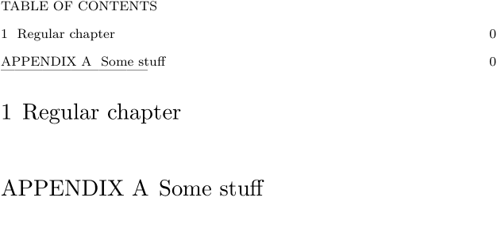

Syntax (autogenerated)
Syntax
| \appendix[ref,ref,...]{...} | |
| [ref,ref,...] | |
| {...} | text |
Description
Starts appendix part of a book.
No longer exists in Mk IV. Instead use
-
\setuppapersize[A5] % When writing out the appendix title, place the name % APPENDIX before the appendix letter \setuplabeltext[appendix=APPENDIX~] % Add the APPENDIX label defined above to the % table of contents title. The width=fit makes the % label, number, and title fit on the TOC line. % The stopper adds spaces between label+number and the % title. \setuplist[chapter][label=yes,width=fit, stopper=~~] \startbodymatter TABLE OF CONTENTS \placecontent -------------------------------- \chapter{Regular chapter} % ... \stopbodymatter \startappendices \chapter{Some stuff} % ... \stopappendices
produces
- 
Example
See also
Help from ConTeXt-Mailinglist/Forum
All issues with: